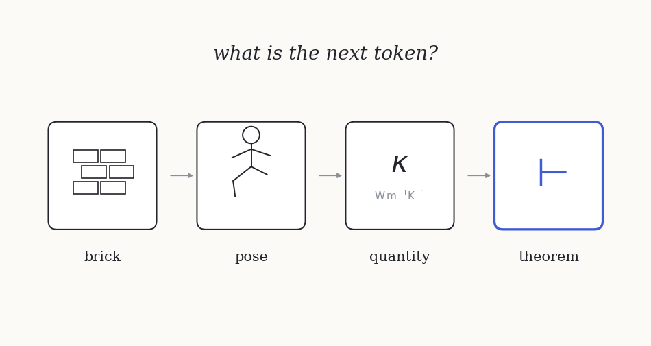

A language model does one thing, billions of times a second: given everything written so far, it guesses what comes next. The unit of the guess is the token, a shard of a word; "thermoelectric" arrives in pieces. The astonishing part of the last few years is not the guessing, it is how far shards of words turned out to go.

The interesting question begins where the sentence ends. Suppose the thing being continued is not a paragraph but a bridge. What is the machine's next token? A brick is the tempting answer, and it is the wrong one for a precise reason: a brick knows its own shape and nothing else. The bricklayer's next brick is constrained by the course beneath it; the engineer's next element is constrained by every load path in the structure. Continue a bridge brick by brick and you get a pile that looks like a bridge. Continue it member by member, each token carrying what it must not do, yield, buckle, resonate, and you get a bridge. The token of a bridge is not the brick. It is the brick plus statics.
I think about this daily, because my day job is movement. At Tonal we watch strength training through sensors, hundreds of terabytes of it, and the same question sits under everything: what is the next token of a squat? A video frame is the brick answer, dense and true and meaningless on its own. A better token is a pose with a body attached: joint angles that know their ranges, a bar path that knows what fatigue does to it, a rep that knows it belongs to a set, to a workout, to a person with a left knee that has opinions. The moment the token carries physiology, predicting the next one stops being video compression and starts being coaching.
There is a pattern here, and it is worth saying plainly. The best token for a domain is the smallest unit that cannot lie about it. Word shards lie fluently; that is what a hallucination is, grammar without ground. A structural member that violates statics is not an awkward sentence, it is a collapse, so the constraint has to live inside the token itself. As the token acquires constraints, the predictor stops hallucinating and starts designing.
Before movement, my field was heat. I spent years simulating how phonons carry heat through crystals, and the raw output of such a simulation is a tensor of numbers. Numbers are bricks. The honest token of a simulation is the quantity: a value that carries its dimension, its temperature and boundary conditions, the approximation regime that produced it, and the identity of the code that ran. When two codes disagree about "thermal conductivity" they usually disagree about the token, not the physics: one means the lattice part in the relaxation-time approximation at 300 K, the other means the total. Spell the token out completely and the disagreement either dissolves or becomes a discovery. Both outcomes are science; the shouting in between is not.
One domain has finished the job. In Lean, a proof assistant, a mathematical statement is a type and a proof is a term of that type. The kernel checks the term or rejects it, and there is no such thing as a plausible proof. A theorem is a token that cannot lie, not because anyone is vigilant but because the type system makes the lie inexpressible. Mathlib, the community library, now holds on the order of two hundred thousand machine-checked theorems, accumulated over a decade by people who understood early that the bottleneck was never the model. It was the token.
Physics is following, and quietly. Physlib, which grew out of Joseph Tooby-Smith's HepLean, is doing for physical theory what Mathlib did for mathematics: the entropy of an ideal gas, tight-binding chains, relativity, quantum information, each formalized so that the compiler is the referee. It is patient, unglamorous infrastructure work, the kind that looks slow right up until it becomes indispensable. I sent the project my first small contribution last week, the thermoelectric figure of merit, and I can report that a referee that compiles is a strange and excellent thing: the review made the physics cleaner within a day, and no one had to take my word for anything.
The money has noticed. Last July, Alex Gerko, the founder of XTX Markets, gave ten million dollars through Renaissance Philanthropy, half to the Lean FRO and half to Mathlib, aimed at natural-language interfaces to Lean and datasets for AI-assisted mathematical discovery. Read it as a position, not a donation: a bet that the future of AI in mathematics runs through tokens that cannot lie.
Next-token prediction does not change when the token changes. Everything around it does. With word shards it is autocomplete. With members it is structural engineering; with poses it is coaching; with quantities it is simulation you can trust; with theorems it is discovery with a referee. The machines will predict whatever tokens we hand them. We owe them tokens that cannot lie.